온실가스관리기사 (2017-05-07 기출문제)
1과목: 기후변화개론
1. 대기의 연직구조 중 대류권에 관한 설명으로 옳지 않은 것은?
- 눈, 비 등의 기상현상이 일어난다.
- 고도가 높아질수록 기온은 낮아진다.
- 고도가 1km 상승함에 따라 온도는 약 6.5℃씩 감소한다.
- 일반적으로 고위도 지방이 저위도 지방에 비해 대류권의 고도가 높다.
(정답률: 92%)

2. IPCC 5차 평가보고서에 따른 지구복사강제력(RF)이 높은 순서에서부터 낮은 순서대로 가장 적합하게 나열된 것은?
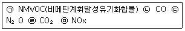
- ㉢ → ㉠ → ㉣ → ㉤ → ㉡
- ㉣ → ㉡ → ㉢ → ㉠ → ㉤
- ㉢ → ㉡ → ㉤ → ㉠ → ㉣
- ㉣ → ㉠ → ㉢ → ㉡ → ㉤
(정답률: 91%)
3. 다음은 기후변화 관련 국제기구 중 어떤 기구에 관한 설명인가?
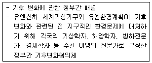
- UNFCCC
- IPCC
- UNEP
- UNDP
(정답률: 70%)
4. 교토의정서의 교토메커니즘에 포함되지 않는 것은?
- 배출권거래제
- 청정개발체제
- 배출권할당제
- 공동이행제도
(정답률: 89%)
5. IPCC 5차 평가보고서에서 새롭게 제시된 기후변화 시나리오인 대표농도경로(RCP, Representative Concentration Pathways)의 시나리오별 대기 중 CO2(2100년 기준) 모의농도가 알맞게 연결된 것은?
- RCP 8.5：CO2 농도 870ppm
- RCP 6.0：CO2 농도 670ppm
- RCP 4.5：CO2 농도 450ppm
- RCP 2.6：CO2 농도 320ppm
(정답률: 67%)
6. 다음은 CDM사업관련 주요기관의 기능 및 역할에 관한 설명이다. ( )안에 가장 적합한 기관은?
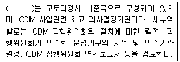
- 국가 CDM 승인기구(DNA)
- CDM 사업운영기구(DOE)
- CDM 집행위원회(EB)
- 당사국총회(COP/MOP)
(정답률: 80%)
7. ISO 국제표준(ISO 14064) 지침 원칙에서 배출량 산정보고서와 관련하여 충족해야 하는 4가지 조건과 거리가 먼 것은?
- 완전성
- 추가성
- 정확성
- 일관성
(정답률: 91%)
8. 교토메커니즘 중 부속서 I국가 간에 온실가스 감축사업을 공동 수행하여 발생한 저감분을 저감 실적으로 인정하는 제도는?
- Joint Implementation
- Clean Development Mechanism
- Emission Trading
- Adsorption Implementation
(정답률: 64%)
9. 우리나라 산림부문과 관련된 기후변화 적응대책으로 가장 거리가 먼 것은?
- 벌채수확의 확대
- 병해충발생 예찰시스템 강화
- 기후변화 취약생물자원의 현지외 보전
- 산사태 등 재해예방을 위한 방재림 조성
(정답률: 94%)
10. 온실가스 감축을 위한 인위적인 조치를 취하지 않을 경우 배출이 예상되는 202년도의 온실가스 배출총량(2020년 BAU)을 부문별로 세분화 했을 경우, 다음 중 가장 많은 배출량을 차지하는 것은?
- 산업부문
- 수송부문
- 건물부문
- 폐기물부문
(정답률: 93%)
11. 다음은 어떤 회의에서 논의된 중요 사항인가?
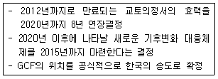
- 2009년 코펜하겐회의(COP-15)
- 2010년 칸쿤회의(COP-16)
- 2011년 더반회의(COP-17)
- 2012년 도하회의(COP-18)
(정답률: 50%)
12. 풍향, 풍속과 운량, 운고, 일조량 등의 자료로부터 계산하여 대기확산모델 등의 입력자료로 가장 널리 사용하는 대기안정도의 분류법은?
- Monin-Dbkhov법
- Richardson법
- Oasquill법
- Irwin법
(정답률: 70%)
13. 다음 온실가스 중 온실가스 배출 총량비(%)로 가장 많은 부분을 차지하고 있는 것은?
- 이산화탄소
- 메탄
- 아산화질소
- 육불화황
(정답률: 80%)
14. 제품의 생산, 수송, 사용, 폐기 등의 모든 과정에서 발생되는 온실가스 발생량을 CO2 배출량으로 환산하여 라벨형태로 제품에 부착하는 탄소성적표지제도의 특징과 가장 거리가 먼것은?
- 온실가스의 배출량을 제품에 표기하여 소비자에게 제공함으로써 시장주도로 저탄소소비 문화 확산에 기여한다.
- 탄소성적표지 인증은 법적 강제 인증제도가 아니라 기업의 자발적 참여에 의한 인증제도이다.
- 1간계 탄소배출량 인증과 2단계 저탄소제품 인증으로 구성된다.
- 탄소배출량 인증제품은 기후변화에 대응한 제품임을 기업자체가 인증한 것이다.
(정답률: 67%)
15. 2007년 5월에 “Cool Earth 50”을 발표하여 공격적인 지구온난화 외교전략을 펼쳤으며, 국가 전략차원에서 태양광, 풍력, 지열, 조력 등 지속적으로 이용가능한 에너지의 개발 보급을 위해 소위 “선샤인프로젝트”를 진행한 국가는?
- 일본
- 케냐
- 독일
- 인도
(정답률: 71%)
16. 대기를 조성하는 기체 중 직접 온실가스가 아닌 것은?
- SF6
- CO2
- CH4
- NO2
(정답률: 93%)
17. 극한기후 정의를 위해 우리나라 기상청에서 제시한 폭염일수와 호우일수에 대한 기준이 다음과 같을 때, ㉠, ㉡에 해당하는 것은?
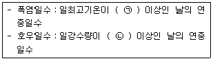
- ㉠ 40℃, ㉡ 150mm
- ㉠ 40℃, ㉡ 80mm
- ㉠ 33℃, ㉡ 150mm
- ㉠ 33℃, ㉡ 80mm
(정답률: 81%)
18. 기후시스템에서 구름의 영향에 관한 설명으로 가장 적합한 것은?
- 구름과 온난화는 관련이 없다.
- 낮은 구름이 증가하면 온난화 효과가 크다.
- 낮은 구름보다 높은 구름이 증가하면 지구복사에너지를 더 많이 흡수한다.
- 현재까지는 온난화로 높은 구름이 감소할 가능성이 지배적인 것으로 알려져 있다.
(정답률: 81%)
19. 다음 온실가스 배출기업 중 연간 온난화 기여도가 가장 큰 기업은? (단, 그 밖에 배출하는 온난화 유발물질은 없다고 가정)
- 이산화탄소를 평균 24,000톤/월 배출하는 기업
- 메탄가스를 평균 1,200톤/월 배출하는 기업
- 아산화질소를 평균 78톤/월 배출하는 기업
- 육불화황을 평균 1톤/월 배출하는 기업
(정답률: 85%)
20. 기후변화에 의해 우리나라에서 나타나는 곤충생태계의 변화로 가장 거리가 먼 것은?
- 북방계 곤충의 증가
- 남방계 곤충의 증가
- 일반 곤충의 해충화 현상
- 곤충 생활 주기의 변화
(정답률: 77%)
2과목: 온실가스 배출의 이해
21. 혐기성 소화조에서 소화효율 개선을 위한 방안과 거리가 먼 것은?
- 하수처리시설로 유입되는 분류식관을 합류식관으로 교체한다.
- 소화조 내 온도를 35℃ 정도로 유지하도록 한다.
- 알칼리도를 2,000∼5,000mg/L 정도로 유지하도록 한다.
- 소화조 내 과도한 산이 형성되지 않도록 한다.
(정답률: 47%)
22. 온실가스ㆍ에너지 목표관리 운영 등에 관한 지침상 다음 조건에서 산정한 시멘트 소성시설의 클링커 배출계수(tCO2/t-clinker)는? (단, 미소성된 CaO, MgO는 0으로 가정)
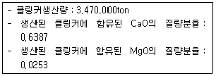
- 0.4291
- 0.5290
- 0.6440
- 0.7431
(정답률: 53%)
23. 온실가스ㆍ에너지 목표관리 운영 등에 관한 지침상 광물분야의 여러 공정 중 온실가스가 배출되는 원리가 다른 것은?
- 석회 생산시 석회석 사용
- 시멘트 생산시 석회석 사용
- 배연탈황시설의 흡수제로 석회석 사용
- 유리 생산 시 용융ㆍ용해시설에서 석회석 사용
(정답률: 58%)
24. 저공해차량에 대한 설명 중 옳은 것은?
- 하이브리드자동차의 연비는 이동평균속도가 높은 구역에서 상대적 증가한다.
- 플러그인 하이브리드자동차는 외부충전이 가능한 하이브리드자동차이다.
- 연로전지 자동차는 연료전지에서 전기분해한 수소를 환원시켜 주행하는 자동차이다.
- 연료전지 자동차는 정숙성과 가속성능면에서는 미흡한 단점이 존재한다.
(정답률: 62%)
25. 다음은 철강생산의 고로공정 구성이다. ( )안에 들어갈 부생가스로 옳은 것은?
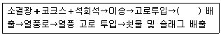
- COG
- BFG
- LDG
- FOG
(정답률: 80%)
26. 다음의 조직경계에서 각 사업장의 온실가스 배출량 산정방법으로 옳지 않은 것은?
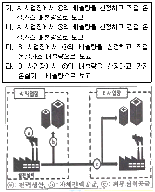
- 가, 나
- 나, 다
- 나, 라
- 다, 라
(정답률: 67%)
27. 온실가스ㆍ에너지 목표관리 운영 등에 관한 지침상 이동연소의 온실가스 보고 대상 배출시설에 해당하지 않는 것은?
- 민간 항공기
- 전기기관차
- 이륜자동차
- 이동식 소각로
(정답률: 79%)
28. 온실가스ㆍ에너지 목표관리 운영 등에 관한 지침상 하ㆍ폐수 처리에 의한 배출량 산정으로 옳지 않은 것은?
- 하수처리시 배출량산정은 유입수와 방류수의 BOD5를 고려한다.
- 폐수처리시 배출량산정은 유입수와 방류수의 BOD5를 T-P를 고려한다.
- 분뇨처리시설도 하ㆍ폐수 처리 및 배출의 보고대상 배출시설에 해당한다.
- 폐수처리시 배출량 산정은 메탄 회수량을 고려한다.
(정답률: 58%)
29. 다음은 온실가스ㆍ에너지 목표관리 운영 등에 관한 지침상 합금철 생산공정에서 전로에 관한 설명이다. ㉠, ㉡에 알맞은 것은?
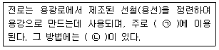
- ㉠ 산화ㆍ환원반응 ㉡ 접촉산화법과 비접촉산화법
- ㉠ 탈탄 또는 탈인반응 ㉡ 산정전로법과 염기성전로법
- ㉠ 산화ㆍ환원반응 ㉡ 산성전로법과 염기성전로법
- ㉠ 탈탄 또는 탈인반응 ㉡ 접촉산화법과 비접촉산화법
(정답률: 58%)
30. 온실가스ㆍ에너지 목표관리 운영 등에 관한 지침상 이동연소(도로)의 보고대상 배출시설에 해당하지 않은 것은?
- 경영 승용자동차
- 대형 승합자동차
- 대형 화물자동차
- 경형 이륜자동차
(정답률: 85%)
31. 온실가스ㆍ에너지 목표관리 운영 등에 관한 지침상 이동연소 온실가스 배출량에 영향을 주는 인자로 거리가 먼 것은?
- 연료 종류에 대한 온실가스 배출계수
- 연료의 순발열량
- 연료 사용량
- 연료의 온도
(정답률: 78%)
32. 온실가스ㆍ에너지 목표관리 운영 등에 관한 지침상 기타 온실가스 배출에 속하지 않는 배출활동은?
- CO2 용접
- 에틸렌 절단
- 아세틸렌 용접
- SF6 전기절연제 사용
(정답률: 59%)
33. 온실가스ㆍ에너지 목표관리 운영 등에 관한 지침상 하ㆍ폐수 처리 공정 중 질소, 인으로 대표되는 영양 염류의 제거를 주목적으로 수행하는 처리과정은?
- 고도 처리
- 2차 처리
- 호기성 처리
- 열분해 처리
(정답률: 71%)
34. 온실가스ㆍ에너지 목표관리 운영 등에 관한 지침상 온실가스 배출분야의 석유정제공정 중 배출시설의 종류가 아닌 것은?
- 소성시설
- 수소 제조시설
- 촉매재생시설
- 코크스 제조시설
(정답률: 53%)
35. 연소공정에서 발생할 수 있는 열손실을 줄이기 위해 배기가스의 온도를 줄일 수 있는 방법으로 가장 거리가 먼 것은?
- 터뷰레이터 설치를 통한 열전달 비율의 증가
- 이코노마이저를 이용한 증기 발생
- 공기예열기 설치를 이용한 연료의 예열
- 기체연료의 공급압력 증가로 연소출력 증가
(정답률: 63%)
36. 온실가스ㆍ에너지 목표관리 운영 등에 관한 지침상 석회석을 탈탄산 시켜서 제조하는 것은?
- 생석회
- 소석회
- 수산화칼슘
- 탄산마그네슘
(정답률: 60%)
37. 매립폐기물 내 분해 가능한 탄소가 수십 년에 걸쳐 혐기성 분해된다는 가정에서 출발한 일차분해반응모델로서 매립시설에서 메탄배출량 산정방법으로 활용되고 있는 방법은?
- Mass Balance Method
- First Order Decay Method
- Affordable Budgeting Method
- Competitive Parity Method
(정답률: 65%)
38. 온실가스ㆍ에너지 목표관리 운영 등에 관한 지침상 반도체 및 기타 전자부품 제조시설 중 온실가스 배출형태가 공정배출인 것을 올바르게 짝지은 것은?
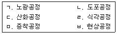
- ㄱ, ㄴ
- ㄷ, ㄹ
- ㄹ, ㅁ
- ㅁ, ㅂ
(정답률: 89%)
39. 온실가스ㆍ에너지 목표관리 운영 등에 관한 지침상 유리생산에서 주요 온실가스 배출공정은 융해공정이다. 이 융해공정 중 CO2를 배출하는 주요원료와 가장 거리가 먼 것은?
- 알루미나
- 석회석
- 백운석
- 소다회
(정답률: 74%)
40. 온실가스ㆍ에너지 목표관리 운영 등에 관한 지침상 온실효과를 유발하는 온실가스 중 수소불화탄소(HFCs)에 해당하지 않는 물질은?
- HFC-23
- HFC-40
- HFC-143a
- HFC-236fa
(정답률: 45%)
3과목: 온실가스 산정과 데이터 품질관리
41. 온실가스ㆍ에너지 목표관리 운영 등에 관한 지침상 관리업체(업체)의 2014년 1월 1일부터 적용되는 지정기준으로 옳은 것은?
- 온실가스 배출량 50kilotonnes CO2-eq 이상, 에너지 소비량 200terajoules 이상
- 온실가스 배출량 87.5kilotonnes CO2-eq 이상, 에너지 소비량 350terajoules 이상
- 온실가스 배출량 125kilotonnes CO2-eq 이상, 에너지 소비량 500terajoules 이상
- 온실가스 배출량 150kilotonnes CO2-eq 이상, 에너지 소비량 700terajoules 이상
(정답률: 65%)
42. 온실가스ㆍ에너지 목표관리 운영 등에 관한 지침에 따른 이동연소(선박)의 온실가스 배출량 산정방법에 대한 설명 중 옳은 것은?
- 보고대상 온실가스는 CO2, CH4, N2O이다.
- 국제 수상 운송에 의한 온실가스 배출량은 산정 대상이다.
- Tier 4 산정방법론이 있다.
- Tier 2 배출계수는 사업자가 자체 개발한 계수이다.
(정답률: 42%)
43. 온실가스ㆍ에너지 목표관리 운영 등에 관한 지침에 따른 품질관리(QC) 활동의 의미 또는 그 목적으로 거리가 먼 것은?
- 자료의 무결성, 정확성 및 완전성을 보장하기 위한 일상적이고 일관적인 검사의 제공
- 오류 및 누락의 확인 및 설명
- 배출량 산정자료의 문서화 및 보관
- 배출량 산정 과정에 직접적으로 관여하지 않은 사람에 의해 수행되는 검토 절차의 계획된 시스템
(정답률: 58%)
44. 온실가스ㆍ에너지 목표관리 운영 등에 관한 지침상 고정연소(고체연료)의 Tier 1에 대하산업분야별 활동자료의 정의는?
- 사업자 또는 연료공급자에 의해 측정된 측정불확도 ±0.5% 이내의 연료 사용량 자료를 활용한다.
- 사업자 또는 연료공급자에 의해 측정된 측정불확도 ±2.5% 이내의 연료 사용량 자료를 활용한다.
- 사업자 또는 연료공급자에 의해 측정된 측정불확도 ±5.0% 이내의 연료 사용량 자료를 활용한다.
- 사업자 또는 연료공급자에 의해 측정된 측정불확도 ±7.5% 이내의 연료 사용량 자료를 활용한다.
(정답률: 88%)
45. 배출량 산정ㆍ보고 원칙 중 배출량을 과대 또는 과소평가되지 않도록 산정해야 함을 나타내는 원칙은?
- 투명성
- 일관성
- 완전성
- 정확성
(정답률: 60%)
46. 온실가스ㆍ에너지 목표관리 운영 등에 관한 지침에 따라 액체연료의 발열량을 분석하기 위한 시료채취 및 분석의 최소주기기준으로 옳은 것은?
- 월1회
- 분기1회 또는 연료 입하 시(더욱 짧은 주기로 분석한다.)
- 월1회 또는 원료 매 2만톤 입하 시(더욱 짧은 주기로 분석한다.)
- 월1회 또는 원료 매 5만톤 입하 시(더욱 짧은 주기로 분석한다.)
(정답률: 55%)
47. 온실가스ㆍ에너지 목표관리 운영 등에 관한 지침에 의거, 소다회 생산에 대한 온실가스 배출량 산정방법에 대한 설명으로 옳지 않은 것은?
- 보고대상 온실가스는 CO2만 해당한다.
- 활동자료로서 트로나(Trona) 광석 사용량 또는 소다회 생산량 자료를 사용한다.
- 연속측정방식(CEM)을 이용한 배출량 산정방법론은 적용될 수 없다.
- 2006 IPPC 가이드라인에서 소다회 단위 생산량에 대한 기본 배출계수값을 제공하고 있다.
(정답률: 42%)
48. 온실가스ㆍ에너지 목표관리 운영 등에 관한 지침에 따른 열(스팀)의 외부 공급 시 간접배출계수 개발 방법 중 열병합 발전시설에서 열(스팀) 생산에 따른 온실가스 배출량 산출식을 설명한 내용으로 옳지 않은 것은?
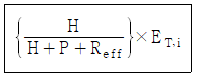
- H는 열생산량(TJ)을 의미한다.
- P는 전기생산량(TJ)을 의미한다.
- Reff는 전기 생산효율을 열 생산효율로 나눈 값이다.
- ET,i는 열병합 발전설비의 총 온실가스배출량을 말한다.
(정답률: 56%)
49. 온실가스ㆍ에너지 목표관리 운영 등에 관한 지침에 따른 배출시설의 배출량 규모에 따른 산정등급(Tier) 분류기준에서 연간 50만톤 이상의 배출시설에 해당하는 그룹은?
- A그룹
- B그룹
- C그룹
- D그룹
(정답률: 86%)
50. 온실가스ㆍ에너지 목표관리 운영 등에 관한 지침에 따른 불소화합물 생산시설에서의 온실가스 배출량 산정방법에 대한 설명 중 옳지 않은 것은?
- Tier 1 산정방법은 HCFC-22 또는 기타 불소화합물의 생산량과 기본 배출계수를 이용한다.
- HFC-23의 CO2 지구온난화지수는 12,700을 적용한다.
- Tier 2 산정방법은 HCFC-22의 생산량과 공정효율을 이용하여 계산된 HFC-23의 배출계수를 통해 배출량을 산정하는 방법이다.
- Tier 3 산정방법은 활동자료의 이용가능성에 따라 3가지로 구분한다.
(정답률: 65%)
51. 온실가스ㆍ에너지 목표관리 운영 등에 관한 지침에 따른 배출량 산정결과의 품질관리(QC)활동에서 '보고의 적절성' 세부내용에 해당하지 않는 것은?
- 조직경계 설정의 적절성, 정확성 확인
- 배출량 산정 및 보고 업무담당자 및 내부감사 담당자 등에 책임, 권한의 문서화 여부
- 지침에서 요구하는 자료의 목차, 내용, 서식에 따라 적절하게 배출량을 보고하는지 여부
- 배출량 산정과 관련한 정보화시스템을 구축하거나 활용할 경우, 자료의 입력 및 처리과정의 적절성 여부 확인
(정답률: 31%)
52. 온실가스 배출권거래제 운영을 위한 검증지침상 검증대상 내부의 관리구조상 오류를 적발하지 못한 리스크에 해당하는 것은?
- 고유리스크
- 상대리스크
- 통제리스크
- 검출리스크
(정답률: 50%)
53. 어느 업체의 A보일러시설에서 경유사용을 통해 배출되는 온실가스 배출량이 20만톤 CO2-eq일 때, 온실가스ㆍ에너지 목표관리 운영 등에 관한 지침에 따른 적용해야 할 온실가스 산정방법론의 최소적용기준 Tier 수준은?
- Tier 1
- Tier 2
- Tier 3
- Tier 4
(정답률: 59%)
54. 온실가스 배출권거래제 운영을 위한 검증지침상 온실가스 배출량 및 에너지소비량 검증에 관한 설명으로 옳지 않은 것은?
- 검증팀은 5인 이상의 검증심사원으로 구성하여야 한다.
- 검증팀의 검증심사원 중 1명을 검증팀장으로 선임하여야 한다.
- 검증팀에는 검증대상이 속하는 분야에 대한 자격을 갖춘 검증심사원이 1인 이상 포함되어야 한다.
- 피검증자에 대한 컨설팅에 참여한 자로서 참여를 종료한 날로부터 2년이 경과되지 아니한 자는 검증팀에 포함될 수 없다.
(정답률: 57%)
55. 온실가스ㆍ에너지 목표관리 운영 등에 관한 지침에 따른 연속측정방법의 배출량 산정방법에 대한 설명으로 옳지 않은 것은?
- 측정자료의 수치맺음시 수수점 이하는 셋째자리에서 반올림하여 산정하며, 유량은 정수로 산정한다.
- 자동측정자료의 배출량 산정시 30분 배출량은 g단위로 계산하고, 수수점 이하는 버림처리하여 정수로 산정한다.
- 월 배출량은 g단위로 환산한 후, 소수점 이하는 버림 처리하여 정수로 산정한다.
- CO2 평균농도는 습가스 기준의 부피농도를 사용한다.
(정답률: 67%)
56. 매립, 하ㆍ폐수 처리 등의 활동에서 회수하여 재이용할 수 있는 온실가스의 종류는?
- 육불화황
- 메탄
- 이산화질소
- 수소불화탄소
(정답률: 80%)
57. 온실가스ㆍ에너지 목표관리 운영 등에 관한 지침상 탈루성 배출시설에 해당되지 않는 것은?
- 원유 저장시설
- 지하 탄광
- 화물선
- 천연가스 저장시설
(정답률: 43%)
58. 코크스로를 운영하고 있는 A사업장에서 유연탄 15만톤(0.67C)을 사용하여 코크스 10만톤(0.83C)을 생산하였을 경우, Tier 1을 이용하여 온실가스 배출량을 산정할 경우에 발생된 온실가스양(tCO2-eq)은? (단, CO2 배출계수：0.56tCO2/t코크스, CH4 배출계수：0.1tCH4/t코크스)
- 약 56,000
- 약 84,000
- 약 140,000
- 약 266,000
(정답률: 46%)
59. 다음 고체연료 중 연소과정에서의 이산화탄소 직접배출량을 총 온실가스 배출량에서 제외하는 연료는?
- 무연탄
- 갈탄
- 역청탄
- 목탄
(정답률: 72%)
60. 온실가스ㆍ에너지 목표관리 운영 등에 관한 지침에 따라 고정연소(고체연료) 중 발전부문에 대해 Tier 2방식으로 배출량 산정시 적용하는 산화계수는?
- 0.99
- 0.98
- 0.97
- 0.96
(정답률: 81%)
4과목: 온실가스 감축관리
61. 외부사업 타당성 평가 및 감축량 인증지침에서 외부사업 타당성 평가를 위한 추가성 평가항목으로 거리가 먼 것은?
- 환경적 추가성
- 법적 추가성
- 제도적 추가성
- 경제적 추가성
(정답률: 59%)
62. CCS(Carbon Capture and Storage)에 대한 설명으로 옳지 않은 것은?
- 간접감축 방법의 일종이다.
- CO2를 대기로 배출시키기 전에 고농도로 포집ㆍ압축ㆍ수송ㆍ저장하는 기술이다.
- 배기가스로부터 CO2만을 선택적으로 분리 포집하는 기술이다.
- 연소 후 포집, 연소 전 포집, 순산소 연소 포집기술로 구분할 수 있다.
(정답률: 71%)
63. 온실가스 감축기술 및 방법에 대한 설명으로 옳지 않은 것은?
- 공정에서 사용되는 온실가스를 비온실가스 또는 지구온난화지수(GWP)가 낮은 물질로 대체하는 것은 '직접 감축방법'이다.
- 외부로부터 탄소배출권을 구매하는 탄소상쇄는 '간접 감축방법'이다.
- 온실가스 배출이 높은 공정을 배출이 적은 공정으로 대체하는 것은 '직접 감축방법'이다.
- 신재생에너지를 도입 적요하여 배출원의 온실가스 배출을 상쇄하는 방법은 '직접 감축방법'이다.
(정답률: 80%)
64. 온실가스ㆍ에너지 목표관리 운영 등에 관한 지침상 불확도를 줄이기 위한 QA/QC 관리 내용으로 옳지 않은 것은?
- QA/QC의 목표는 배출량 산정ㆍ보고 원칙이 구현되어 신뢰도 있는 명세서 작성을 보증하는 것이다.
- 배출량 보고와 관련한 위험을 완화하는 일련의 활동을 내부감사라 한다.
- QC는 독립적인 제3자에 의해 검토되는 과정이다.
- QA/QC 활동은 배출량 산정구조를 검토하는 것에서 출발한다.
(정답률: 48%)
65. 다음 중 고온형 연료전지에 해당되는 것은?
- 고체산화물 연료전지
- 알칼리 연료전지
- 인산염 연료전지
- 고분자 전해질막 연료전지
(정답률: 50%)
66. Carbon Capture and Storage(CCS)은 대표적 온실가스인 CO2를 발생원으로부터 포집한 후 압축, 수송을 거쳐 육상 또는 해양지중에 안전하게 저장하거나 유용물질로 전환하는 일련의 과정을 포함하는데, 다음 중 CO2 저장기술로 부적합한 것은?
- 폐유전과 폐가스전(Depleted Oil & Gas Reservoirs)
- 심층 연수전(Deep Saline Reservoirs)
- 채광성 두꺼운 석탄층(Minable Coal Seams)
- 심해저장(Storage in the Deep Ocean)
(정답률: 60%)
67. 다음은 조기감축실적의 인정 가능대상사업의 유형에 관한 설명이다. ㉠, ㉡에 알맞은 것은? (단, 온실가스ㆍ에너지 목표관리 운영 등에 관한 지침기준)
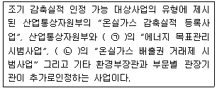
- ㉠ 환경부, ㉡ 산업통상자원부
- ㉠ 농림축산식품부, ㉡ 환경부
- ㉠ 국토교통부, ㉡ 농림축산식품부
- ㉠ 국토교통부, ㉡ 환경부
(정답률: 74%)
68. 탄소흡수원 중 산림의 특성에 관한 설명으로 틀린 것은?
- 식물체의 광합성과 호흡 작용은 기온에 따라 크게 영향을 받는다.
- 산림 바이오매스에는 낙엽 등의 고사유기물과 토양내 탄소가 포함된다.
- 산림은 탄소흡수원과 저장고의 기능과 더불어, 배출원이기도 하다.
- 산불과 병충해와 같은 산림재해도 산림으로부터 온실가스를 배출하는 배출원이다.
(정답률: 43%)
69. CDM 사업 추진시 사업 참가자들(PPs)과 계약을 통해 타당성 평가 및 검ㆍ인증을 수행하는 CDM 관련 기관으로 가장 적합한 것은?
- DOE
- DNA
- MOP
- EA
(정답률: 62%)
70. A 철강회사는 온실가스 감축을 위해 주 연료로 사용되는 경유를 프로판으로 대체하였다. 경유 100,000kL를프로판 50,000kL로 대체할 경우 약 몇 tCO2-eq의 온실가스 배출량을 감축하였는가?
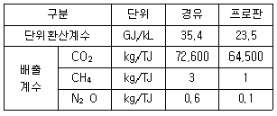
- 약 152,000
- 약 162,000
- 약 172,000
- 약 182,000
(정답률: 58%)
71. [보기]와 같은 조건에서 온실가스 직접 감축방법에 의해 감축된 양(kgCO2-eq)은?
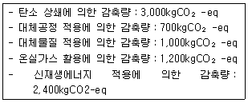
- 1,700
- 2,900
- 5,400
- 8,300
(정답률: 39%)
72. CDM 프로젝트 사업계획서(PDD：Project Design Document) 작성 시 다루어져야 할 항목과 가장 거리가 먼 것은?
- 프로젝트의 개요
- 선정된 승인방법론에 입각한 프로젝트 설명
- 프로젝트가 환경에 미치는 영향에 대한 설명
- 지역 이해관계자의 의견보다 우선한 제안자의 입장 표명
(정답률: 75%)
73. 다음 중 포집한 이산화탄소의 영구적 또는 반영구적 저장기술의 구분과 가장 거리가 먼것은?
- 지중저장기술
- 탱크저장기술
- 해양저장기술
- 지표저장기술
(정답률: 70%)
74. 온실가스ㆍ에너지 목표관리 운영 등에 관한 지침상 조기감축실적을 인정함에 있어 고려되어야 할 기준과 해당사항에 관한 설명으로 거리가 먼 것은?
- 조기감축실적은 국내에서 실시한 행동에 의한 감축분에 한하여 그 실적을 인정한다.
- 조기감축실적은 관리업체의 조직경계 안에서 발생한 것에 한하여 그 실적을 인정한다. 다만, 복수의 사업자가 참여하여 조직경계 외에서 실적이 발생한 경우에는 이를 인정할 수있다.
- 조기감축실적은 배출시설 단위에서의 감축분에 대해서만 인정된다.
- 조기감축실적으로 인정되기 위해서는 조기행동으로 인한 감축이 실제적이고 지속적이어야 하며, 정량화 되어야 하고 검증 가능하여야 한다.
(정답률: 57%)
75. 다음 바이오에탄올과 바이오디젤의 설명으로 옳지 않은 것은?
- 바이오에탄올의 원료는 주로 녹말 작물이며, 바이오디젤은 식물성 기름이 원료이다.
- 바이오에탄올은 휘발유 첨가제로 사용되며, 바이오디젤은 경유와 혼합하여 사용된다.
- 바이오에탄올은 원재료가 고가이며 제한적인 반면, 바이오디젤의 경우 이론적으로는 모든 식물을 대상으로 할 수 있다.
- 바이오에탄올은 미국과 중남미 등에서 사용되고 있으며, 바이오디젤은 유럽, 미국 및 동남아 등에서 사용되고 있다.
(정답률: 59%)
76. 다음 신ㆍ재생에너지 중 신에너지에 속하는 것은?
- 태양에너지
- 연료전지
- 풍력
- 지열에너지
(정답률: 74%)
77. 다음 내용이 설명하는 것으로 맞는 것은?
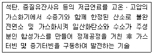
- 열병합
- 가스화 복합발전기술
- 폐기물에너지화
- CCs
(정답률: 72%)
78. 보일러의 효율을 높여 온실가스 배출량을 줄이기 위한 방법으로 적합하지 않은 것은?
- 보일러에 공급되는 물을 예열한다.
- 연소를 위해 공급되는 공기를 예열한다.
- 증기과열기를 연도에 설치한다.
- 배기가스의 온도를 높게 유지한다.
(정답률: 74%)
79. CDM 사업의 추진절차로 가장 적합한 것은?
- 사업계획서 작성→타당성 평가→모니터링→신청사업 등록→검증→인증→배출권 발급
- 사업계획서 작성→신청사업 등록→타당성 평가→모니터링→검증→인증→배출권 발급
- 사업계획서 작성→타당성 평가→신청사업 등록→모니터링→검증→인증→배출권 발급
- 사업계획서 작성→신청사업 등록→모니터링→검증→인증→타당성 평가→배출권 발급
(정답률: 50%)
80. 다음 중 온실가스 감축을 위한 신재생에너지관련 기술에 해당하지 않는 것은?
- 태양열 및 태양광
- 석탄 액화 가스화기술
- 전기집진기술
- 연료전지(Fuel Cell)
(정답률: 72%)
5과목: 온실가스관련 법규
81. 온실가스 배출권의 할당 및 거래에 관한 법률 시행령상 2차 계획기간에 배출권의 무상할당배율은?
- 할당대상업체별로 할당되는 배출권의 100분의 97
- 할당대상업체별로 할당되는 배출권의 100분의 95
- 할당대상업체별로 할당되는 배출권의 100분의 90
- 할당대상업체별로 할당되는 배출권의 100분의 87
(정답률: 78%)
82. 저탄소 녹색성장 기본법상 거짓으로 인증이나 확인을 받은 경우로서 그에 따른 녹색기술ㆍ녹색산업의 적합성 인증 및 녹색전문기업 확인을 취소할 수 있는 자는?
- 정부
- 대통령
- 국무총리
- 녹색산업투자회사
(정답률: 58%)
83. 온실가스ㆍ에너지 목표관리 운영 등에 관한 지침상 관리업체가 총 온실가스 배출량에서 제외하고 보고하는 온실가스 배출량이 아닌 것은?
- 바이오매스 사용에 따른 이산화탄소의 직접배출량
- 관리업체 내부 발전시설에서의 LNG 사용에 따른 직접배출량
- 관리업체 외부로부터 공급받은 공정폐열 사용에 따른 간접배출량
- 관리업체 외부의 폐기물 소각열 회수시설에서 공급받아 사용한 소각열의 간접배출량
(정답률: 39%)
84. 온실가스ㆍ에너지 목표관리 운영 등에 관한 지침상관리업체가 조기감축실적에 대하여 인정을 받고자 하는 경우 조기감축실적 인정신청서를 작성하여 관리업체별로 부문별 관장기관에게 제출하여야 하는 기간(기준)은?
- 최초 지정된 해의 7월 31일까지
- 최초 지정된 해의 12월 31일까지
- 최초 지정된 해의 다음 연도 7월 31일까지
- 최초 지정된 해의 다음 연도 12월 31일까지
(정답률: 73%)
85. 저탄소 녹색성장 기본법상 지방녹색성장위원회에 대한 설명 중 틀린 것은?
- 위원장 2명을 포함한 50명 이내의 위원으로 구성한다.
- 행정부지사 또는 행정부시장은 위원회 위원장이 될 수 없다.
- 시ㆍ도 소속 실장ㆍ국장급 공무원 중 시ㆍ도지사가 임명하는 사람은 위원이 될 수 있다.
- 기후변화, 에너지ㆍ자원, 녹색기술ㆍ녹색산업 등 저탄소 녹색성장에 관한 학식과 경험이 풍부한 사람 중에 시ㆍ도지사가 위촉하는 사람은 위원이 될 수 있다.
(정답률: 64%)
86. 온실가스 배출권의 할당 및 거래에 관한 법률 시행령상 배출권 할당의 취소에 대한 설명으로 옳지 않은 것은?
- 주무관청은 할당대상업체가 배출권 할당 취소 사유가 있는 경우에는 해당 할당대상업체에 대하여 실태조사를 할 수 있다.
- 주무관청은 할당대상업체가 전체 시설을 폐쇄하였거나 할당대상업체의 시설 가동이 1년이상 정지된 경우 배출권 할당을 취소할 수 있다.
- 할당대상업체는 거짓으로 받은 배출권 할당 취소 사유가 발생하였을 때에는 그 사유가 발생한 날부터 10일 이내에 주무관청에 통보하여야 한다.
- 배출권 할당의 취소는 주무관청이 해당 할당대상업체의 배출권 거래계정에서 배출권 예비분을 위한 배출권 거래계정으로 배출권을 이전하는 방식으로 한다.
(정답률: 53%)
87. 온실가스ㆍ에너지 목표관리 운영 등에 관한 지침상 “이산화탄소에 대한 온실가스의 복사 강제력을 비교하는 단위로서 해당 온실가스의 양에 지구 온난화지수를 곱하여 산출한 값”을 말하는 용어는?
- 온실가스 배출량
- 온실가스 산정
- 이산화탄소 배출량
- 이산화탄소 상당량
(정답률: 58%)
88. 온실가스ㆍ에너지 목표관리 운영 등에 관한 지침상 용어의 뜻 중 “동일 법인 등이 당해 사업장의 조직 변경, 신규 사업에의 투자, 인사, 회계, 녹색경영 등 사회통념상 경제적 일체로서의 주요 의사결정이나 온실가스 감축 및 에너지 절약 등의 업무집행에 필요한 영향력을 행사하는 것을 말한다.”를 일컫는 것은?
- 가시적인 영향력
- 지배적인 영향력
- 총괄적인 영향력
- 관리적인 영향력
(정답률: 73%)
89. 저탄소 녹색성장 기본법상 자원순환 산업의 육성ㆍ지원 시책에 포함되어야 하는 사항과 가장 거리가 먼 것은?
- 자원의 수급 및 관리
- 자원순환 관련 기술개발 및 산업의 육성
- 에너지자원으로 이용되는 목재, 식물 등 바이오매스의 판매촉진을 위한 홍보매체 선정
- 폐기물 발생의 억제 및 재제조ㆍ재활용 등 재자원화
(정답률: 69%)
90. 저탄소 녹색성장 기본법상 녹색경제ㆍ녹색산업 구현을 위한 기본원칙이 아닌 것은?
- 정부는 화석연로의 사용을 단계적으로 축소하고 녹색기술과 녹색산업을 육성함으로써 국가경쟁력을 강화하고 지속가능발전을 추구하는 경제를 구현하여야 한다.
- 정부는 녹색경제 정책을 수립ㆍ시행할 때 금융ㆍ산업ㆍ과학기술ㆍ환경ㆍ국토ㆍ문화 등 다양한 부문을 통합적 관점에서 균형있게 고려하여야 한다.
- 정부는 저탄소 녹색산업구조가 에너지ㆍ자원 다소비형 산업구조로 단계적으로 전환되도록 노력하여야 한다.
- 정부는 저탄소 녹색성장을 추진할 때 지역 간 균형발전을 도모하며 저소득층이 소외되지 않도록 지원 및 배려하여야 한다.
(정답률: 63%)
91. 할당대상업체가 검증기관의 검증을 거친 명세서를 각 부문별 관장기관의 장에게 전자적 방식으로 제출하여야 하는 시기(기준)는?
- 매 이행연도 종료일까지
- 매 이행연도 종료일부터 1개월 이내
- 매 이행연도 종료일부터 2개월 이내
- 매 이행연도 종료일부터 3개월 이내
(정답률: 67%)
92. 저탄소 녹색성장 기본법령상 온실가스 감축과 에너지 절약 및 에너지 이용을 효율적으로 하기 위한 온실가스ㆍ에너지 목표관리에 관한 총괄ㆍ조정기능을 수행하는 자는?
- 기획재정부장관
- 국무조정실장
- 환경부장관
- 산업통상자원부장관
(정답률: 89%)
93. 온실가스 에너지 목표관리 운영 등에 관한 지침상 규정되어 있는 관리업체(업체 기준)지정 기준에 대한 설명으로 틀린 것은?
- 해당 연도 1월 1일을 기준으로 최근 2년간 업체의 모든 사업장에서 배출한 온실가스와 소비한 에너지의 연평균 총량을 기준으로 한다.
- 신설 등으로 인해 지정기준에 해당하는 자료가 없을 경우에는 보유(최초 가동연도를 포함한다)하고 있는 자료를 기준으로 한다.
- 2014년 1월 1일부터 적용되는 온실가스 배출량(kilotonnes CO2-eq) 기준은 50 이상이다.
- 2014년 1월 1일부터 적용되는 에너지 소비량(terajoules) 기준은 200 이상이다.
(정답률: 67%)
94. 온실가스 배출권의 할당 및 거래에 관한 법률상 주무관청은 매 계획기관 시작 몇 개월전까지 배출권거래제 할당대상업체를 지정ㆍ고시하여야 하는가?
- 12개월 전까지
- 6개월 전까지
- 5개월 전까지
- 3개월 전까지
(정답률: 69%)
95. 저탄소 녹색성장 기본법령상 관리업체가 매년 제출하여야 하는 온실가스 배출량 및 에너지소비량에 관한 명세서에 포함되어야 하는 사항이 아닌 것은?
- 명세서에 관한 품질관리 절차
- 업체의 규모, 생산설비, 제품원료 및 생산량
- 배출권의 할당 대상이 되는 부문 및 업종에 관한 사항
- 포집ㆍ처리한 온실가스의 종류 및 양
(정답률: 64%)
96. 에너지 및 재생에너지 개발ㆍ이용ㆍ보급촉진법상 산업통상자원부장관은 관계중앙행정기관의 장과 협의한 후 신ㆍ재생에너지정책심의회의 심의를 거친 신ㆍ재생에너지의 기술개발 및 이용ㆍ보급을 촉진하기 위한 기본계획을 몇 년마다 수립하여야 하는가?
- 1년
- 5년
- 10년
- 20년
(정답률: 80%)
97. 저탄소 녹색성장 기본법상 정부가 저탄소 녹색성장을 촉진하기 위하여 수립ㆍ시행하여야 하는 금융 시책에 포함되어야 하는 사항과 가장 거리가 먼 것은?
- 녹색경제 및 녹색산업의 지원 등을 위한 재원의 조성 및 자금 지원
- 저탄소 녹색성장을 지원하는 새로운 금융상품의 개발
- 저탄소 녹색성장을 위한 기반시설 구축사업에 대한 민간투자 활성화
- 녹색경제 관련 정보의 수집ㆍ분석 및 제공
(정답률: 43%)
98. 온실가스 배출권의 할당 및 거래에 관한 법률 시행령상 할당대상업체가 주무관청에 제출하여야 하는 상쇄배출권의 제출한도(기준)는 얼마인가?
- 할당대상업체 배출권의 100분의 1 이내의 범위
- 할당대상업체 배출권의 100분의 5 이내의 범위
- 할당대상업체 배출권의 100분의 10 이내의 범위
- 할당대상업체 배출권의 100분의 20 이내의 범위
(정답률: 64%)
99. 저탄소 녹색성장 기본법상 녹색성장위원회 심의사항으로 옳은 것은?
- 지방자치단체의 저탄소 녹색성장의 기본방향에 관한 사항
- 지방추진계획을 이행하기 위한 중점 추진과제 및 실행계획
- 저탄소 녹색성장과 관련된 국제협상ㆍ국제협력, 교육ㆍ홍보, 인력양성 및 기반구축 등에 관한 사항
- 지방추진계획의 수립에 관한 사항
(정답률: 30%)
100. 저탄소 녹색성장 기본법 시행령상 정부가 녹색기술ㆍ녹색산업 집적지 및 단지를 조성하게 할 수 있는 대통령령으로 정하는 기관 또는 단체가 아닌 것은?
- ｢교통안전공단법｣에 따른 교통안전공단
- ｢에너지이용합리화법｣에 따른 한국에너지공단
- ｢고등교육법｣에 따른 대학ㆍ산업대학ㆍ전문대학 및 기술대학
- ｢한국환경산업기술원법｣에 따른 한국환경산업기술원
(정답률: 20%)